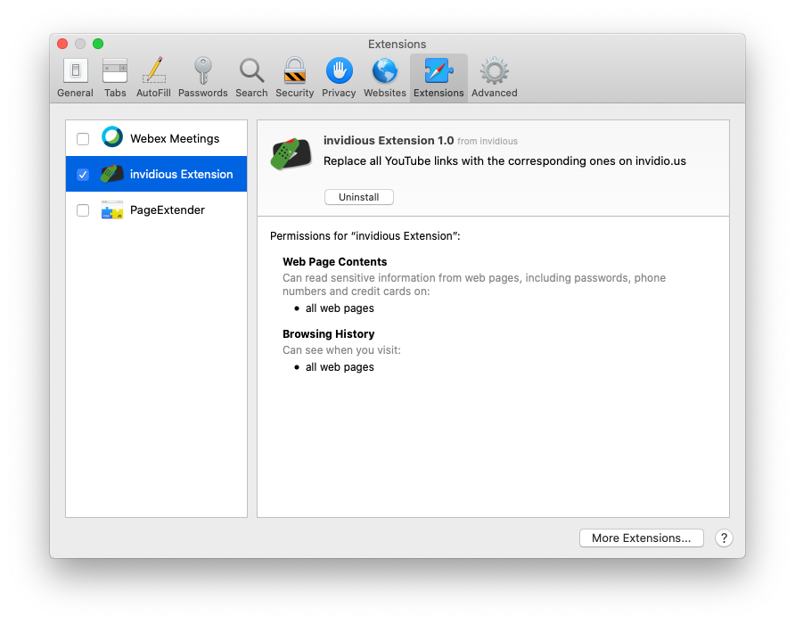
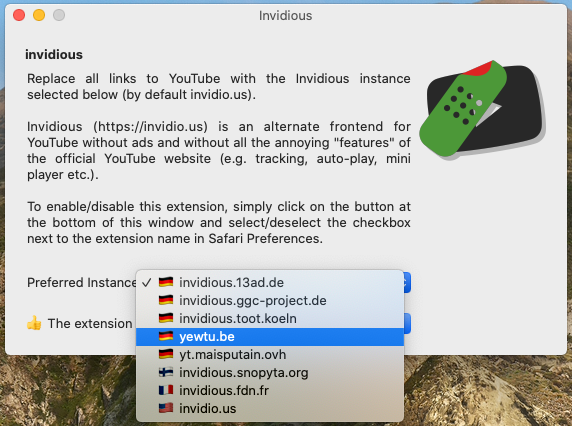

Invidious Safari Extension
https://swiftinside.com/invidios

Invidious is an
alternate interface (also called front-end) to YouTube, without the ads or the tracking.
There are a few
invidious installations
(also called instances) one can choose.
They all serve the same content but one instance might be faster than the others depending on its
geographical proximity to the viewer.
The Invidious Safari Extension, once enabled, redirects all YouTube links to the corresponding
ones on the invidious instance of choice.
The Invidious Safari extension is automatically installed by macOS the first time the user runs
the Invidious app. Once that is done, the app itself does not need to stay open or be executed at
all, although there is no harm in doing that.
Users can choose to activate the Invidious Safari extension by clinking on the corresponding checkbox
in the Safari Preferences, under the Extensions tab (see image below). The Invidious app checks whether
the Invidious Safari extension is active or not and display a small status line in its main window.

The Invidious Safari extension itself should be completely transparent to the user and has has
no UI elements whatsoever.
The main use of the Invidious app, on the other hand, is to select which
invidious instance
to use (see image below).

As shown in the image above, users can select their preferred instance from the application drop-down
menu. One should be aware that
invidious is a volunteer
project and instances can and do have varying levels of uptime. Please check the
invidious Wiki for more
information and uptime statistics.
For more information and updates, please visit the
Invidious Safari Extension homepage
(available at https://swiftinside.com/invidios) or send email to
support@swiftinside.com.
Have fun in a world with somewhat fewer ads and tracking beacons!